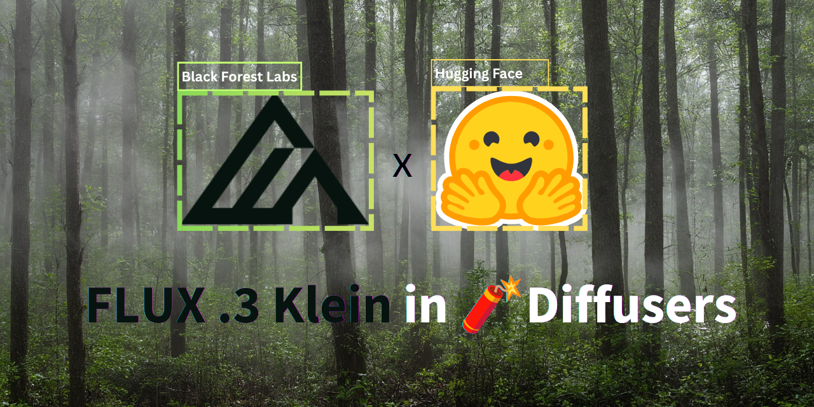

Black Forest Labs выпустила FLUX 3 Image Klein — открытую модель на 5,6 млрд параметров для генерации по тексту, редактирования изображений и генерации по референсам (до 10 опорных картинок за раз). Она делит общие возможности с большой FLUX 3 Image: нативное 4K, редактирование «пиксель в пиксель» и ограничивающие рамки, которые задают, куда ставить элемент или где правка разрешена. Особенность подхода — FLUX 3 обучалась совместно на изображениях, видео и аудио: картинки дают пространственные детали, видео — динамику движения и физики, звук — сведения о событиях и взаимодействиях. По замыслу авторов, именно это делает картинки «заземлёнными» на реальном мире.
Внутренние оценки компании ставят Klein на первое место среди открытых моделей по генерации по тексту, мультиреференсной генерации и редактированию — причём выше закрытых Ideogram V4.5 и FLUX.2 [pro]. При 5,6 млрд параметров это самая маленькая модель в сравнении: у Qwen-Image 2.1 — 7B, у Krea 2 — 12,9B. По сравнению с прежней FLUX.2 [klein] 9B модель прибавила 91 Elo в генерации и 70 в редактировании, используя на 38% меньше параметров. Веса генератора занимают 11,2 ГБ в BF16 и 5,6 ГБ в FP8, а INT8-сборка запускается на GeForce RTX даже с 8 ГБ видеопамяти. Через ComfyUI дистиллированная версия рисует картинку 1 Мп примерно за 4 секунды на RTX 5090 и меньше чем за 9 секунд на RTX 4070; на серверной GB300 в NVFP4 — быстрее 0,6 секунды.
Веса выложены на Hugging Face в базовой и дистиллированной сборках под FLUX Kommunity License: бесплатное коммерческое применение разрешено людям и компаниям с годовой выручкой до 5 млн долларов, остальным — самохостируемая лицензия или API. В Diffusers и ComfyUI модель поддержана с первого дня, LoRA-дообучение доступно сразу через Diffusers и AI Toolkit. Через собственный API цена начинается с 0,009 доллара за картинку, а чекпоинты перед релизом прошли внутреннее красное тестирование и внешнюю проверку партнёра по безопасности Cinder.
Klein — второй открытый релиз семейства FLUX 3 после Action, 7-миллиардной модели для управления роботами, и явно готовит серию. Главный посыл релиза: качество перестало требовать огромных весов. Модель, которая влезает в 8 ГБ видеопамяти, обгоняет закрытые сервисы и по качеству, и по скорости ответа — сильный аргумент для локального развёртывания, устройств с требованиями к суверенитету данных и редактирования прямо на ноутбуке. Гонка открытых весов за последний месяц заметно ускорилась, и теперь в ней выигрывает не тот, кто больше, а тот, кто эффективнее.